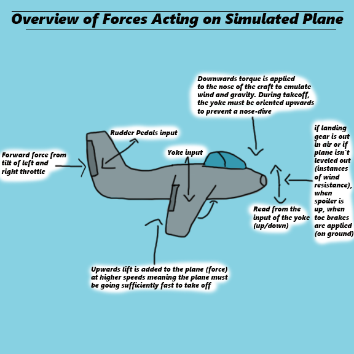

Realistic Jet Handling in an Airplane Simulation
Learn to take off, fly, and land in a virtual reconstruction of Corvallis
Key Features and Workflow
Choose your experience
As with the rest of the XR seating buck, the jet simulation is meant to be interactive. Use VR or a normal screen, fully adjust your physical environment, play with keyboard or mockups of real A-10C warthog hardware
Realistic Plane Physics
The car simulation is powered by realistic car physics in Unreal Engine, enabling dynamic interactions with the environment. Using input from hardware like manual transmission, steering wheels, and pedals, the car mimics real-world driving behavior, enhancing the immersion of the simulation.
Interactive interior
The interior of the jet plane features several elements taken from real airplanes to help you more easily learn to fly. A working GPS; a HUD telling you your speed, pitch, and yaw with a horizon marker; and cameras to help you see the outside of your plane from different angles
Problem Statement
Teaching Flight Basics
The purpose of this program is to teach the user the basics of how they could fly an airplane. This needs to be accomplished in two parts:
- Realistic Physics Simulation
- A detailed tutorial
- The airplane must be made to feel as similar to a real plane as possible by gathering as much reference material as possible. This was done through a combination of studying airplane cockpit tour videos, airplane flight videos, jet plane discussion forums, and a few pages describing airplane physics
- While having all of the features is nice, most users won’t be able to intuit how to fly an airplane. When testing with my teammates, everyone knew how to operate the throttle but the pedals frequently proved to be an issue and no one knew fully the correct procedure for takeoff or landing. This showed the need for a structured tutorial
- The tutorial covers takeoff, flight, and landing. Each section describes what you should be doing in text with animated gifs showing the relevant locations on the screen and animations of what you should be doing
- Each tutorial can use proximity to points to decide when they’re done. When you’re high enough in the air you’ve taken off, when you’re at cruising altitude you’re flying, and when you’re close to the final airport it’ll tell you how to land
- Unfortunately, a lot of learning a plane can be boiled down to intuition so users may not get this correct on their first try but that’s the point of a simulation
Input
Physics Forces
Basic Input
We used the Raw Input plugin for Windows to support multiple custom controllers. Inputs from pedals, throttles, and sticks were manually mapped to avoid overlap between devices.
Wind Resistance & Gravity
To stabilize aircraft physics, drag and gravity balance input forces. Altitude, plane tilt, and gear positioning all affect drag efficiency, encouraging players to fly at optimal cruising altitudes.
Environment
Visual Navigation
The GPS is integrated into the cockpit screen, showing a dot for the player’s position and another for the destination. A connecting line guides flight. Once close enough, both disappear and the player is notified of arrival.
Logic
- 🔥 Igniting the Scene: Imported Unity’s Particle Pack and applied a fire effect to a house model to simulate a realistic blaze.
- 📈 Growing the Flames: Wrote a script that increases the fire’s scale over time, creating the illusion of a spreading and intensifying fire.
- 🧱 Fire Gets Physical: Added colliders to the fire so it can interact with other objects—especially water.
- 💧 Equipping the Firetruck: Designed a water spray particle system and attached it to the front of the firetruck’s hose.
- 🮠User Control: Mapped hose rotation to the Logitech G920’s steering wheel, allowing players to aim the water manually.
- 🕹️ Triggering the Response: Set up a button on the G920 to activate the water spray, simulating firefighting on command.
- 🔄 Collision Detection: Gave the water particles colliders and scripted interactions to detect contact with fire particles.
- 🌧️ Fire Meets Water: When water hits the fire, the fire’s size is reduced dynamically—visually representing the extinguishing process.